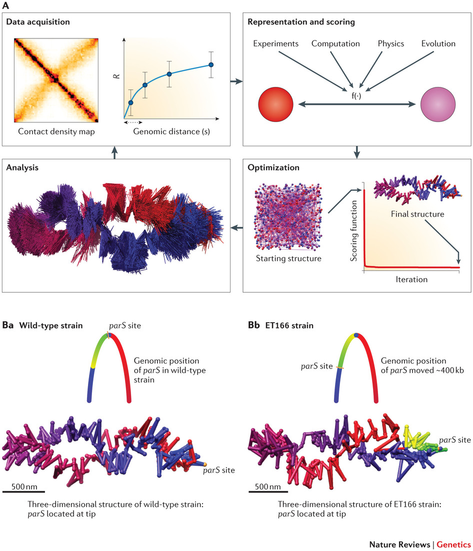

La cromatina es una fibra formada por asociación de DNA genómico y proteínas, no sólo histonas, y es el constituyente esencial del núcleo celular. Cada vez disponemos de más evidencias de que la estructura de la cromatina es clave para entender las funciones de genes, cromosomas e incluso del genoma entero. Algunos de los algoritmos fundamentales que veremos en este curso, ideados originalmente para el estudio individual de moleculas, se están reciclando en la actualidad para el estudio de la cromatina, puesto que en cierto modo podemos modelarla como si fuera una fibra lineal; algo parecido a un polipéptido al que sólo podemos acceder mediante técnicas de resolución limitada.
|

|